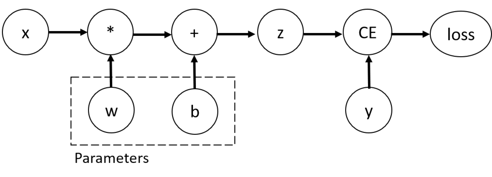

Building the model layers
Build a neural network
take a sample minibatch of 3 images of size 28x28
1 | input_image = torch.rand(3,28,28) |
nn.Flatten
the nn.Flatten layer to convert each 2D 28x28 image into a contiguous array of 784 pixel values (the minibatch dimension (at dim=0) is maintained).
1 | flatten = nn.Flatten() |
nn.Linear
applies a linear transformation on the input using it's stored weights and biases.
1 | layer = nn.Linear() |
nn.ReLU
Non-linear activations are what create the complex mappings between the model's inputs and outputs. They are applied after linear transformations to introduce nonlinearity, helping neural networks learn a wide variety of phenomena.
1 | hidden = nn.ReLu()(hidden) |
nn.Sequential
nn.Sequential is an ordered container of modules. The data is passed through all the modules in the same order as defined. You can use sequential containers to put together a quick network like seq_modules.
1 | seq_modules = nn.Sequential( |
nn.Softmax
The last linear layer of the neural network returns logits - raw values in [-infty, infty] - which are passed to the nn.Softmax module. The logits are scaled to values [0, 1] representing the model's predicted densities for each class. dim parameter indicates the dimension along which the values must sum to 1.
1 | pred_probab = nn.Softmax(dim=1)(logits) |
Model parameters
Many layers inside a neural network are parameterized, i.e. have associated weights and biases that are optimized during training. Subclassing nn.Module automatically tracks all fields defined inside your model object, and makes all parameters accessible using your model's parameters() or named_parameters() methods.
1 | print(seq_modules) |
Automatic differentiation
back propagation：parameters (model weights) are adjusted according to the gradient of the loss function with respect to the given parameter.
PyTorch has a built-in differentiation engine called torch.autograd. It supports automatic computation of gradient for any computational graph.
Consider the simplest one-layer neural network, with input x, parameters w and b, and some loss function.

In this network, w and b are parameters, which we need to optimize.
1 | X = torch.rand(5) |
Thus, we need to be able to compute the gradients of loss function with respect to those variables. set the requires_grad property of those tensors.
Note: You can set the value of
requires_gradwhen creating a tensor, or later by usingx.requires_grad_(True)method.
Computing gradients
compute the derivatives of our loss function with respect to parameters, namely, we need \(\frac{∂loss}{∂w}\) and \(\frac{∂loss}{∂b}\) under some fixed values of x and y. To compute those derivatives, we call loss.backward(), and then retrieve the values from w.grad and b.grad:
1 | loss.backward() |
Note: we can only perform gradient calculations using
backwardonce on a given graph, for performance reasons. If we need to do severalbackwardcalls on the same graph, we need to passretain_graph=Trueto thebackwardcall.
Disabling gradient tracking
By default, all tensors with requires_grad=True are tracking their computational history and support gradient computation.We can stop tracking computations by surrounding our computation code with torch.no_grad() block:
1 | Z = torch.matmul(X, W)+b |
or use the detach() method on the tensor:
1 | Z = torch.matmul(x, w)+b |
There are reasons ( disable gradient tracking ) :
- To mark some parameters in your neural network at frozen parameters. This is a very common scenario for fine tuning a pre-trained network
- To speed up computations when you are only doing forward pass, because computations on tensors that do not track gradients would be more efficient.
TIPS:
Conceptually, autograd keeps a record of data (tensors) and all executed operations (along with the resulting new tensors) in a directed acyclic graph (DAG) consisting of Function objects. In this DAG, leaves are the input tensors, roots are the output tensors. By tracing this graph from roots to leaves, you can automatically compute the gradients using the chain rule.
In a forward pass, autograd does two things simultaneously:
- run the requested operation to compute a resulting tensor
- maintain the operation’s gradient function in the DAG.
The backward pass kicks off when
.backward()is called on the DAG root.autogradthen:
- **computes the gradients from each
.grad_fn, (A reference to the backward propagation function is stored ingrad_fnproperty of a tensor. )- accumulates them in the respective tensor’s
.gradattribute- using the chain rule, propagates all the way to the leaf tensors.
DAGs are dynamic in PyTorch
the graph is recreated from scratch; after each
.backward()call, autograd starts populating a new graph. This is exactly what allows you to use control flow statements in your model; you can change the shape, size and operations at every iteration if needed.
Optional reading: Tensor gradients and Jacobian products
In many cases, we have a scalar loss function, and we need to compute the gradient with respect to some parameters. However, there are cases when the output function is an arbitrary tensor. In this case, PyTorch allows you to compute so-called *Jacobian product*, and not the actual gradient.
For a vector function \(\vec{y}=f(\vec{x})\), where \(\vec{x}=\langle x_1,\dots,x_n\rangle\) and \(\vec{y}=\langle y_1,\dots,y_m\rangle\), a gradient of \(\vec{y}\) with respect to \(\vec{x}\) is given by Jacobian matrix:
\[ J=\left(\begin{array}{ccc} \frac{\partial y_{1}}{\partial x_{1}} & \cdots & \frac{\partial y_{1}}{\partial x_{n}}\\ \vdots & \ddots & \vdots\\ \frac{\partial y_{m}}{\partial x_{1}} & \cdots & \frac{\partial y_{m}}{\partial x_{n}} \end{array}\right) \]
Instead of computing the Jacobian matrix itself, PyTorch allows you to compute Jacobian Product \(v^T\cdot J\) for a given input vector \(v=(v_1 \dots v_m)\). This is achieved by calling backward with \(v\) as an argument. The size of \(v\) should be the same as the size of the original tensor, with respect to which we want tocompute the product:
1 | x1=torch.tensor(1, requires_grad=True, dtype = torch.float) |
Jacobian Motrix : \[ J = \begin{pmatrix} 2x_1 & 2 &1 \\ 2 & 3x_2^2 & 2x_3\\ 1 & 2x_2 & 3x_3^2 \end{pmatrix} \ \ \ \ \ \ \ \ \ \ \ \ \ \ \ \ \ \left\{\begin{matrix} y_1 = & x_1^2+2x_2+x_3 \\ y_2= & x_1+x_2^3+ x_3^2 \\ y_3 = & 2x_1 +x_2^2+x_3^3 \end{matrix}\right. \]
vector v : \[
v = (1,1,1)
\] V * J : \[
v \circ J = (2x_1+2+1,\ \ \ 2+3x_2^2+2x_2,\ \ \ 1+2x_3+3x_3^2)=(5,18,34)
\] The above is essentially the directional derivative
1 | inp = torch.eye(3,3, requires_grad=True) |
Optimizing the model parameters
Training a model is an iterative process:
- in each iteration (called an epoch) the model makes a guess about the output
- calculates the error in its guess (loss), collects the derivatives of the error with respect to its parameters (as we saw in the module)
- optimizes these parameters using gradient descent.
1 | class DataPreparetion: |
Setting hyperparameters
define the following hyperparameters for training:
- Number of Epochs - the number times to iterate over the dataset
- Batch Size - the number of data samples seen by the model in each epoch
- Learning Rate - how much to update models parameters at each batch/epoch. Smaller values yield slow learning speed, while large values may result in unpredictable behavior during training.
1 | learning_rate = 1e-3 |
Add an optimization loop
Each epoch consists of two main parts:
- The Train Loop - iterate over the training dataset and try to converge to optimal parameters.
- The Validation/Test Loop - iterate over the test dataset to check if model performance is improving.
Add a loss function
Loss function measures the degree of dissimilarity of obtained result to the target value, and it is the loss function that we want to minimize during training. To calculate the loss we make a prediction using the inputs of our given data sample and compare it against the true data label value.
Common loss functions include
- nn.MSELoss (Mean Square Error) for regression tasks
- nn.NLLLoss (Negative Log Likelihood) for classification
- nn.CrossEntropyLoss combines
nn.LogSoftmaxandnn.NLLLoss.
We pass our model's output logits to nn.CrossEntropyLoss, which will normalize the logits and compute the prediction error.
Note: The input is expected to contain raw, unnormalized scores for each class.
1 | # Initialize the loss function |
Optimization pass
Optimization algorithms define how this process is performed (in this example we use Stochastic Gradient Descent). All optimization logic is encapsulated in the optimizer object. Here, we use the SGD optimizer; additionally, there are many different optimizers available in PyTorch such as ADAM and RMSProp, that work better for different kinds of models and data.
1 | optimizer = torch.optim.SGD(model.parameters(), lr=learning_rate) |
optimization happens in three steps:
- Call
optimizer.zero_grad()to reset the gradients of model parameters. Gradients by default add up; to prevent double-counting, we explicitly zero them at each iteration. - Back-propagate the prediction loss with a call to
loss.backwards(). PyTorch deposits the gradients of the loss w.r.t. each parameter. - Once we have our gradients, we call
optimizer.step()to adjust the parameters by the gradients collected in the backward pass.
Full implementation
1 | # Get hardware device for training |
Save and load the model
Saving and loading model weights
PyTorch models store the learned parameters in an internal state dictionary, called state_dict. These can be persisted via the torch.save method:
1 | torch.save(model.state_dict(), 'data/model_weights.pth') |
To load model weights, you need to create an instance of the same model first, and then load the parameters using the load_state_dict() method.
1 | model.load_state_dict(torch.load('data/model_weights.pth')) |
Note: Be sure to call
model.eval()method before inferencing to set the dropout and batch normalization layers to evaluation mode. Failing to do this will yield inconsistent inference results.
Saving and loading models with shapes
1 | torch.save(model, 'data/model.pth') |
Note: This approach uses Python pickle module when serializing the model, thus it relies on the actual class definition to be available when loading the model.
Exporting the model to ONNX
PyTorch also has native ONNX export support. Given the dynamic nature of the PyTorch execution graph, however, the export process must traverse the execution graph to produce a persisted ONNX model. For this reason, a test variable of the appropriate size should be passed in to the export routine (in our case, we will create a dummy zero tensor of the correct size):
1 | import torch.onnx as onnx |